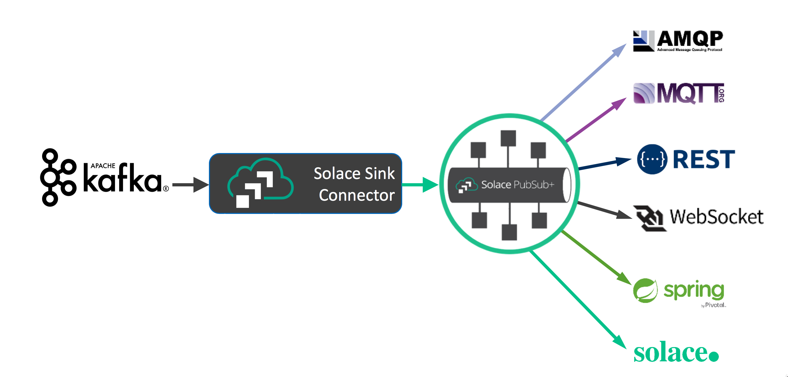
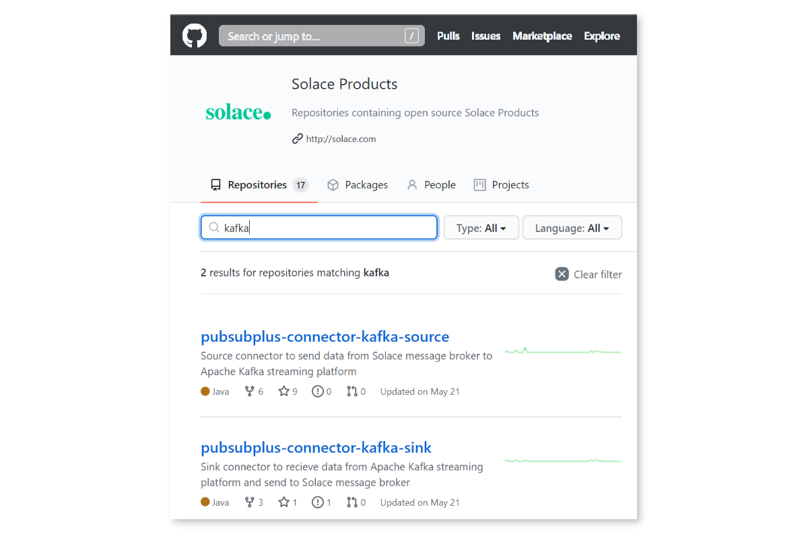
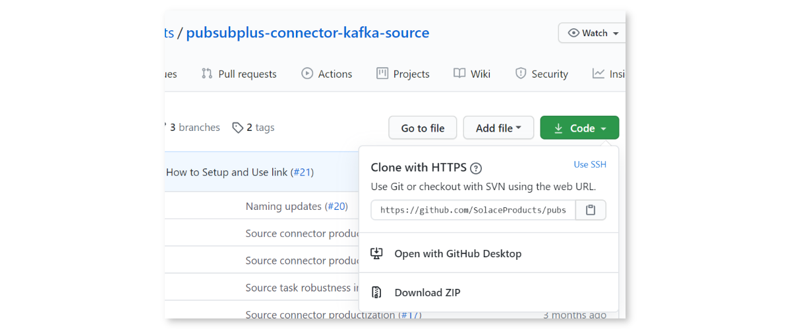
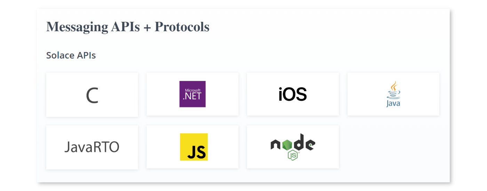
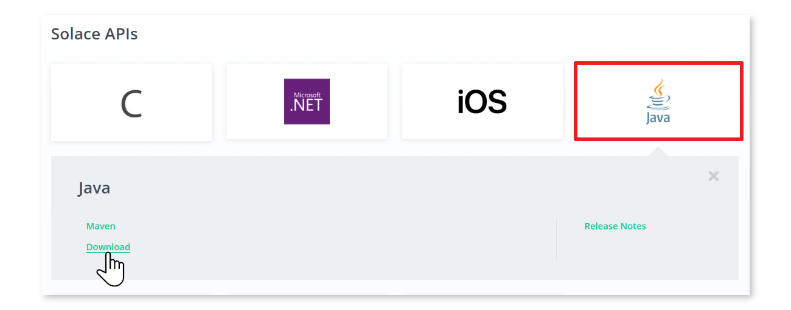

Do you use or want to use Kafka? Want to learn how to integrate Kafka with Solace PubSub+ event brokers?
Using the Kafka Connect API, the Solace-designed PubSub+ Kafka Connectors allow you to both on-ramp and off-ramp data between Solace and Kafka.
Solace allows a wide variety of standard protocols and APIs to connect directly to the broker, such as MQTT, AMQP 1.0, REST, WebSocket, and JMS. This, coupled with Solace's dynamic hierarchical topic structure, and the multi/hybrid cloud event mesh capability, allows Kafka architectures to extend much further than the standard Connector framework allows.


Are The Connectors Proprietary?
No, Solace has released the PubSub+ Connectors for Kafka as open source, and you can find them on GitHub in the following sections of this CodeLab.
- Where to find and download the PubSub+ Connectors for Kafka
- How to (optionally) build and install the PubSub+ Connectors
- Where to download the required Solace PubSub+ Java libraries
- How to run sample Source and Sink Connectors
- Access to a Solace event broker (see below)
- Network connectivity (!?)
Free Solace Access!
The Solace PubSub+ Connectors will work with either standard Apache Kafka, or the proprietary Confluent variant.
Installing Apache Kafka
Download and unzip Kafka onto your server or local machine. This tutorial will assume that it is installed in /opt/kafka_2.12-2.5.0/, the current version of Kafka at the time of this writing.
Installing Confluent Platform
Download and unzip Confluent Platform onto your server or local machine. This tutorial will assume that it is installed in /opt/confluent-5.5.1/, the current of Confluent at the time of this writing.
Create a Topic and Test Publishing and Subscribing
Follow the Quickstart guide and verify you can publish and subscribe to Kafka topics. The sample Solace PubSub+ Connector properties files assume the Kafka topic to be test.
Point your favourite browser to https://github.com/SolaceProducts and search for kafka:

Option 1: Download the Latest Release
If you want the latest release you can download a pre-compiled version.
On the right side of the screen, click the "Releases" and download the latest ZIP or TAR file. Open the archive, and look in the lib directory. Copy the pubsubplus-connector-kafka-[source|sink]-x.x.x.jar file into the Kafka installation location as in the step above.
Option 2: Download and Build the Latest
You can download either or both, building and installation is the same. For simplicity, we will only do the source connector. Download the zip, or clone the project:

The Connectors use Gradle as the Java build tool. There is no need to intall Gradle if you do not have it, everything is self-contained within the Connector distributions.
Simply run ./gradlew assemble on Linux, Mac, or WSL, or .\gradlew.bat assemble on Windows Command Prompt or PowerShell. It might take a little bit of time while the appropriate dependencies are downloaded:
alee@LAPTOP-OQFKDPM0:/mnt/c/Users/AaronLee/Downloads/pubsubplus-connector-kafka-source-master$ ./gradlew assemble
Downloading https://services.gradle.org/distributions/gradle-6.1.1-bin.zip
.........10%.........20%.........30%..........40%.........50%.........60%..........70%.........80%.........90%.........100%
Welcome to Gradle 6.1.1!
Here are the highlights of this release:
- Reusable dependency cache
- Configurable compilation order between Groovy/Kotlin/Java/Scala
- New sample projects in Gradle's documentation
For more details see https://docs.gradle.org/6.1.1/release-notes.html
Starting a Gradle Daemon (subsequent builds will be faster)
BUILD SUCCESSFUL in 39s
4 actionable tasks: 2 executed, 2 up-to-date
alee@LAPTOP-OQFKDPM0:/mnt/c/Users/AaronLee/Downloads/pubsubplus-connector-kafka-source-master$
PS C:\Users\AaronLee\Downloads\pubsubplus-connector-kafka-sink-master> .\gradlew.bat clean assemble
Starting a Gradle Daemon (subsequent builds will be faster)
> Task :compileJava
BUILD SUCCESSFUL in 23s
5 actionable tasks: 5 executed
PS C:\Users\AaronLee\Downloads\pubsubplus-connector-kafka-sink-master>
Look inside the directory ./build/libs/ and there should be a single JAR file there. This is the PubSub+ Connector JAR and must be copied inside the Kafka distribution:
- if standard Apache Kafka, copy to
/opt/kafka_2.12-2.5.0/libs - if Confluent platform, create a new directory
kafka-connect-solaceinside/opt/confluent-5.5.1/share/java/and copy it there
Repeat the same procedure for the Sink Connector.
Point your favourite browser to https://solace.com/downloads and scroll towards the bottom, looking for "Messaging APIs & Protocols":

Click on "Java", and select "Download":

Once the ZIP is downloaded, look inside the lib directory and copy all JARs into the appropriate Kafka location:
- if standard Apache Kafka, copy to
/opt/kafka_2.12-2.5.0/libs - if Confluent platform, create a new directory
kafka-connect-solaceinside/opt/confluent-5.5.1/share/java/and copy it there
Included with the Source and Sink Connectors inside the etc directory are example configuration files. Both properties and JSON format are provided, depending on your runtime requirements:
- When running Connect in standalone mode, use the properties file. Copy the properties files into the
configdirectory - When running in distributed mode, use the JSON file
Open the properties file and note all of the various configuration options exposed. There are both Solace Java (JCSMP) API properties and Kafka Connect properties available to be configured. For more information:
Anatomy of the Kafka Connect Framework

Inside the Solace PubSub+ Connectors, they come with a few different Processors. The source code for all of these is included, and can be customized and extended as required:
Source
- SolSampleSimpleMessageProcessor: very basic, uses
nullfor the key, copies the message payload into the Kafka record - SolaceSampleKeyedMessageProcessor: allows you to specify what attribute to key the Kafka record on (e.g. Destination (aka Solace topic), CorrelationID, etc.)
Sink
- SolSimpleRecordProcessor: very basic, specify which fixed Solace topic or queue to publish to
- SolSimpleKeyedRecordProcessor: allows the ability to specify CorrelationID and other Solace headers
- SolDynamicDestinationRecordProcessor: example of how to construct dynamic Solace topics using the record payload. Modify as appropriate for your data.
The following are all for the standard Apache Kafka variant.
Create a topic:
bin/kafka-topics.sh --bootstrap-server localhost:9092 --create --replication-factor 1 --partitions 2 --topic test
Use 2 partitions.
Then use the console publisher to publish 10 messages into the Kafka topic:
bin/kafka-console-producer.sh --bootstrap-server localhost:9092 --topic test
Then start a consumer and see the order of the records returned. This is why order is not guaranteed for a Kafka topic:
bin/kafka-console-consumer.sh --bootstrap-server localhost:9092 --topic test --from-beginning --property print.key=true
Note the --property print.key=true. This comes in handy when using (e.g.) the Solace Topic (aka Destination) as the key.
At this point, try running the Source connector. Hopefully you have access to some streaming data. We (CTO team at Solace) are building a demo that will provide streaming taxi location info publicly.
Much more detailed documentation on configuration and usage can be found on the Solace PubSub+ Connectors GitHub pages. Please refer there for more information.
✅ For more information on the Kafka Source, Sink and Consumer connectors check out the PubSub+ Connector Hub page
Thanks for participating in this codelab! Let us know what you thought in the Solace Community Forum! If you found any issues along the way we'd appreciate it if you'd raise them by clicking the Report a mistake button at the bottom left of this codelab.